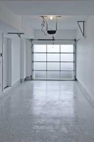

GARAGE DOOR ISSUES IN COLD WEATHER

Our East Point, GA winters get pretty cold sometimes! It can be hard enough having garage door problems in temperate weather, but during cold season; it can be a nightmare! Imagine trying to leave for an important sales meeting or to pick up your child from school. You jump in the car and hit the garage door remote button…and nothing happens. You try again; same result. Now, you are frustrated! You get out of the car and walk over to the wall mounted garage door switch and hit that button; same result. When this happens; don’t panic. Be glad that you read this post by Complete Garage Door Repair; simply follow our advice for a fast return to normal garage door use!
Don’t panic
Easy to say; we know, but hard to actually do. It always seems like cold garage door issues happen at the worst times! If you HAVE to be somewhere, how can you NOT panic? Actually, getting stressed out always makes things worse. It might be a cold garage door that is acting up or it might be a snapped extension spring. The “culprit” doesn’t really matter; what does, is that you keep a clear head so that you are able to get your errands done AND your garage door open and closed again.
First of all…
If you are experiencing cold garage door problems, there is one thing you should do first; check your remote’s battery. While most everyone knows that a drained battery can affect the performance of whatever it is that it usually powers, a cold battery can also do the same. Sometimes all it takes is for the remote battery to warm up in order for it to work. If you have a battery tester at home, be sure to check it to see if it’s still good. If you don’t have a tester, try any local East Point, GA Wal-Mart, Target, Home Depot, Best Buy or Lowe’s and they will gladly test it for you free of charge or obligation.
Photo electric safety eyes
This is another easily fixed but very common garage door problem. Your safety eyes send a beam to each other that when not interrupted, allows your garage door to open or close. If the device gets unplugged or if the safety eyes are not aligned properly, the garage door will not open.
Check your system to ensure that there are no frayed wires or loose hinges that might cause a problem. This beam is what stops the garage door from closing when the cat runs underneath. It is designed for safety but once in a while, something will get in the way and block the signal. This could be a fallen rake or a maybe a bicycle that is parked too closely. What you want is an uninterrupted beam so look out for that.
Here’s an easy way to check for sensor problems. If you find that your remote not working when it’s cold outside, try holding down the wall switch inside the garage. This overrides the safety component and shows that it is indeed your safety eyes. They most likely need realignment. Cold weather (and sometimes hot) here in the greater Atlanta metro area sometimes cause the metal casings of the sensors to expand or contract and this slight change can often throw of the beam just enough to make your East Point, GA garage door stop working.
Are your tracks clean?
One culprit could stop your cold garage door from working is your set of tracks. If there’s grease, grime or oil in your garage door tracks, the colder weather can make them harden and this action alone can interfere with your garage door’s performance. The garage door needs to move smoothly within the tracks and this nasty build-up can put a stop to that. Inspect your tracks and if you see any grimy build-up, simply clean it out with an old toothbrush. No need to lubricate your tracks; just clean them.
Cold garage door springs
The frigid weather here in East Point, GA can often make your garage door’s rollers and springs perform poorly. These two components normally have long life cycles but repeated cold weather spells can shorten this and cause them to wear out sooner.
When your garage door is in the down position, disconnect it from the opener by pulling on the red cord. Now, attempt to open your garage door manually. Note how it opens. Was it smooth and relatively easy to open or was it choppy and difficult to lift? A damaged or broken spring is usually responsible when it’s difficult to open.
Please DON’T attempt spring repair on your own. It’s dangerous and requires expertise that you most likely don’t have. If your rollers or springs need service, call a local garage door professional for safe and reliable repair service that when done right, will last for many years to come. One service you CAN do on your own is lubrication of your garage door parts. Colder weather can often make your tracks and springs freeze up and work erratically. Using a silicone based lubricant on your rollers, tracks, hinges, and springs can often clear up the problem. It’s best to avoid WD-40 as this is a degreaser and not an actual lubricant. Try using a lithium spray or a silicon-based lubricant instead.
Still not working?
If these tips don’t help, it’s time to call in the pros. You are always welcome to call our local Complete Garage Door Repair shop and we’ll be happy to help. Or, choose your favorite East Point, GA garage door repair firm and get your garage door working again, no matter how cold it is outside. If you work with the right company, you make the most use of your time and assets. This is because you will be working with an affordable, highly professional local shop that offers on-site service at your convenience backed by years of experience, training and skill.